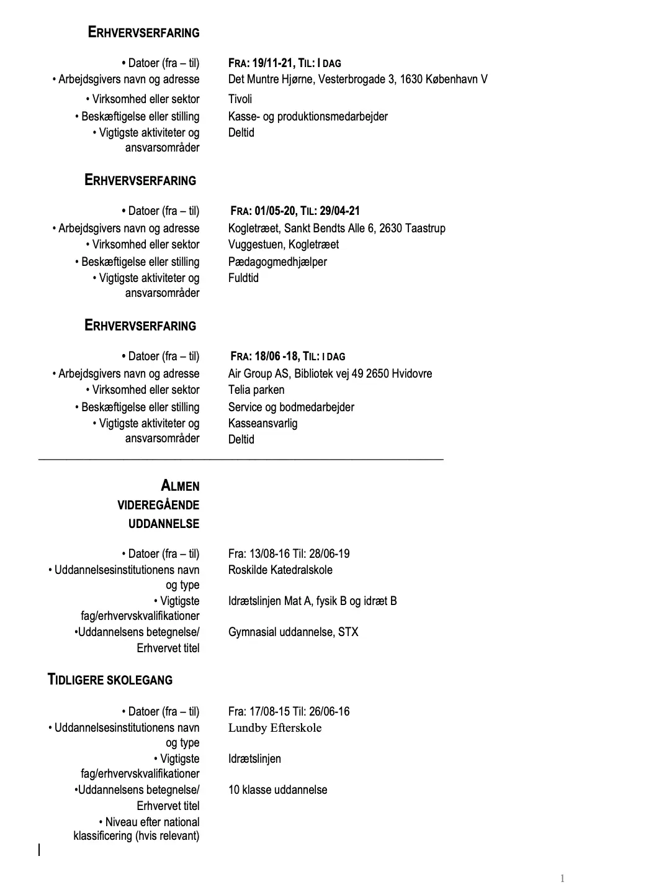
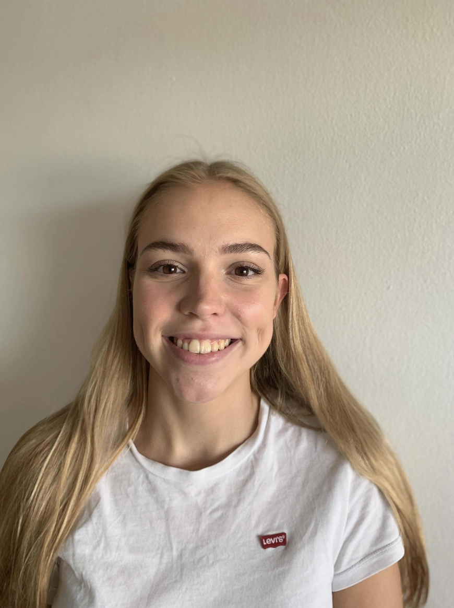

Min fritid
I Min fritid holder jeg utroligt meget af at være kreativ. Det kan både være at male et maleri, sidde og tegne eller bare hive et strikketøj frem. Dette var også en af grundende for at jeg valgte at søge ind på KEA som multimediedesigner. Jeg elsker at blive udfodret på mine kreative evner, både i forhold til designet, men bestemt også ide processen. Derudover gør det det kun federe, at lære at skulle kode det selv fra bunden.
Mit Cv
Inden jeg startede på KEA har jeg holdt 2- og et halvt års sabbatår, hvor jeg har arbejdet og tjent en masse penge ind. Derudover har jeg gået på gymnasiet og på efterskole inden.
Lidt om mig
Hej! Jeg keder Karoline Thomasen og er 23 år gammel. Jeg kommer fra en lille by lidt ude for København sommer hedder Taastrup. Efterfølgende er jeg flyttet til København, da jeg holder meget af bylivet og gerne vil være lidt tættere på centrum. Nu er jeg bosat i Valby og kan næsten sige, at jeg nok bruger alt min tid på at cykle frem og tilbage, om det så er hen på skolen eller til mine venner.